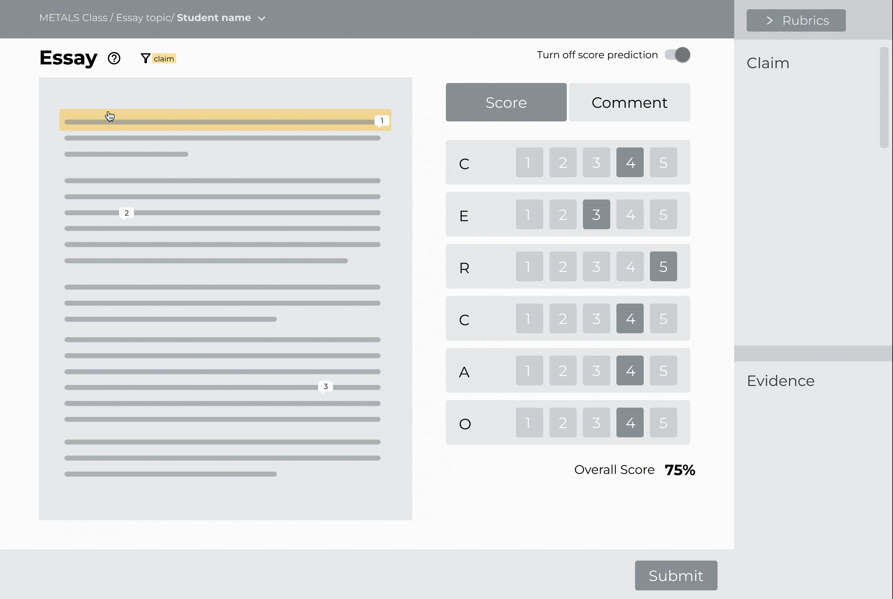

Ideation
We brainstormed 6 ideas and evaluated them with client’s feedback,
feasibility, and impact. We decided to further develop on the idea
of highlighting different rubric components to speed up the
grading and commenting.
Design Goals
P1:
P2:
- In what ways can teachers use essays highlighted by AI most effectively in scoring?
- In what ways can teachers use essays highlighted by AI most effectively in commenting with pre-selected comments?
P2:
- If we were to implement student highlighting (the student highlights the essay themselves), how would teachers respond to the highlights?

Prototyping & Testing
Then we quickly move to wireframe prototypes to evaluate the user
flow.

During multiple rounds of rapid prototyping, user testing and
iteration, we consolidated feedback from ThinkCERCA users,
clients, and other designers.